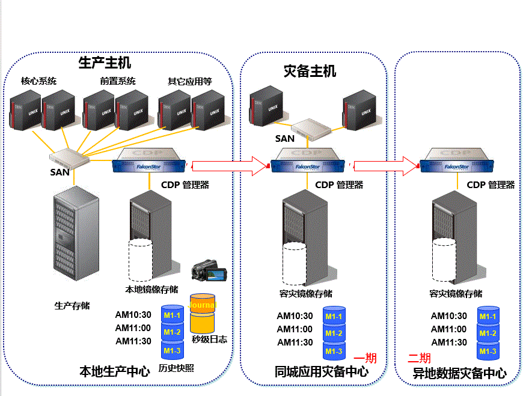

背景知识(技术)
一个交易系统需要满足那些要求？交易系统和其他系统，既有共性，又有很多的不一样地方；
不像其他领域需求比较不确定、多变，对于金融行业，很多业务背景其实几十年，甚至上百年来都没有改变；
很久以前没有电脑时候大家是这样玩的:
可以想象大家济济一堂，熙熙攘攘，吵吵闹闹，对着黑板数字口若悬河，眉飞色舞；和现在对着K线大谈一通其实没有什么差别，只不过过去人与人更近点。
时至今日任然有很多大妈大爷选择在营业厅：
交易平台这样一个充满荷尔蒙，总是让人蠢蠢欲动，欲罢不能的产业，更是在玩家，庄家，服务提供者们的共同努力下，
将技术的运用推到了极致；互联网和移动化，更多的参与者涌入，如何做好这个国民手游，是个非常挑战而又有意义的事情。
安全／高可用¶
对于金融系统来说， 这是个硬性指标，安全可能分不同类别， 比如企业的内部环境，金融系统一般有自己专有网络环境， 对于办公室场所上班行为也有非常严格的控制，毕竟往往堡垒都是从内部攻破。这些都有相应的标准、规范和法律， 基本有专门的团队负责这块东西。
和我们交易相关联的部分， 很大部分是数据和平台的安全， 平台的安全，信息交互的通道安全否， 平台是否稳定， 数据存储安全否，防篡改， 是否有冗余备份，防止丢失。
对于数据通道存储安全，使用加密算法，现在一般都比较成熟， 业有规范的行业标准。
对于平台的安全也就是灾备， 现在的金融系统， 最主流的灾备技术是两地三中心（即生产数据中心、同城灾备中心、异地灾备中心）。
参考下 阿里高可用技术架构 第一个是做了同城的双活，第二个做了异地只读及冷备，第三个是做了异地多活，这块， 基本专门系统团队维护， 对于我们设计开发的团队， 接触不多。 上面的文章， 可能更多的谈到实现的过程， 没有具体实现的细节， 说到这里，其实阿里云上有专门针对金融系统的解决方案。
这里人家也是拿出看家的本领来分享，能够做到异地多活还是非常牛掰和费钱的，保证最终一致性可能是退而求其次的方案， 参考CAP 理论。
翻了翻还有不少： 写事情真不能100%完美退而求其次也不错：《异地多活设计辣么难？其实是你想多了！》 ；服务降级等在应用层中控制也是不错方案。 《面向业务的立体化高可用架构设计》
总之条条大道通罗马，八仙过海各有神通，不拘一格，只要能解决问题的方法就是好方法、对的方法。
保证高可用性，另外一个监控运维也是必不可少的步骤， 毕竟三分代码， 七分运维。总之成功的项目和每个部门、每个环节都密不可分。成功的项目都是类似的， 不成功的项目是千差万别的。
我们这里将主要分享的是， 具体的应用层面， 如何实现数据一致性， 下面会有专门的章节讲解，在应用层面如何使用 Eventsource 等设计模式，保证数据一致性，和可追溯。
对数据的冗余，更多会使用分片partition 和 replication； 如何动态的调整不同节点之间的balance， 整个cluster集群的维护。
性能¶
天下武功，唯快不破；对于交易系统，快代表这先人一步得到消息， 也就意味这更多、更佳的交易机会，和更好的盈利；
所以人对交易系统延误的忍受会被远远的放大， 可能你在刷淘宝的时候多1～2秒延迟你还能忍受， 但是在交易系统，就像有句台词：我分分秒秒几百万的盈亏。
这有点夸张， 但是确实很现实， 特别在高风险、高杠杆化的交易中， 分秒就是盈亏的分界线；
所以性能除了我们上面说到的高可用性外，在单节点上如何实现性能最大化是在设计中必须要考虑的。
现有交易系统大部分基于一些更底层更高效的语言（c/c++）， 但是语言始终是一门工具。能否达到预期的性能需求， 还是要看具体的设计和实现。
Arkenstone 系统， 基础开发语言是java，可能熟悉编程语言的人怀疑java 能否胜任， 但是对于一个企业的开发， 有诸多的因素需要考量：成本，效率，投资回报率等等，
其实对于性能的需求，同高可用性需求一样， 大家有诸多理解上的误区， 这也同大家对质量的理解一样， 质量是越高越好吗？ 答案不是， 是能满足你的质量就是最好的质量。
你用一次性塑料袋去买捆菜， 非得要这个袋子镀金的，上面有印有精美的花纹的， 那是不现实的。
同样对于性能的需求，对于一个目标是服务于每个能上网的民众； 在如今基础上你也许很难达到毫秒级别，即时能够达到， 付出的成本也许大大超出你的承受范围，
所以做生意或者做人一样都得有点妥协，这是么有原则性吗？不是！这恰恰是最好的原则； 鱼与熊掌不可兼得！
于是乎， 达到恰好是资源、能力范围内能够达到，最好的、最大满足性能需求的设计，便是当下最优的设计，不要 over design 才是对你投资人和合伙人最好的负责！
除了java 是基础的语言， 也有必不可少的中间件：缓存、 内存网格、消息等， 下篇篇幅将一一细述。
PS: 对于某些细节过分的追求，可能是大部分技术出生的工科男的一大优点也是一大通病， 项目中最大的风险固然是时间成本不够，还有一个潜在的隐形杀手是项目镀金！
一个项目必须100%完美才能上马？非的花费大部分时间去优化一个1%性能提升的模块？ 不是的。特别对于IT项目，等到完美的那一刻， 也许这个项目永无上线之日。